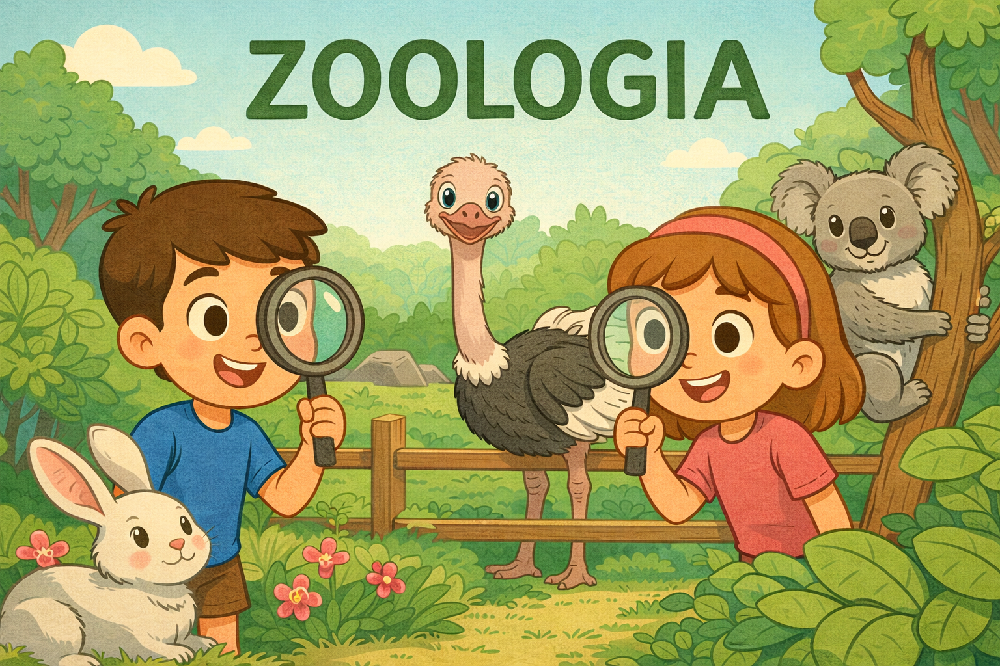
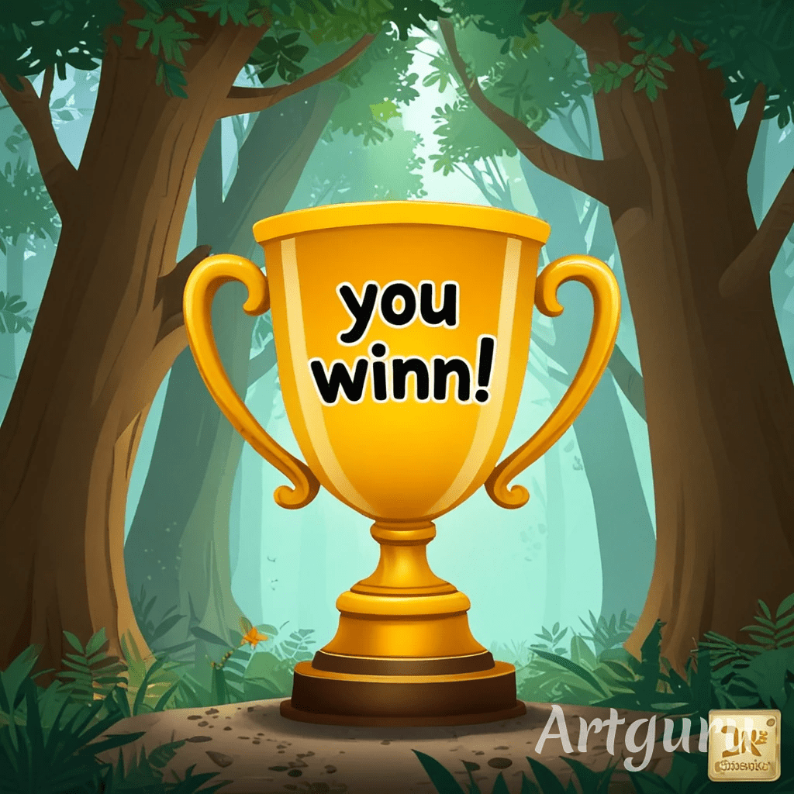
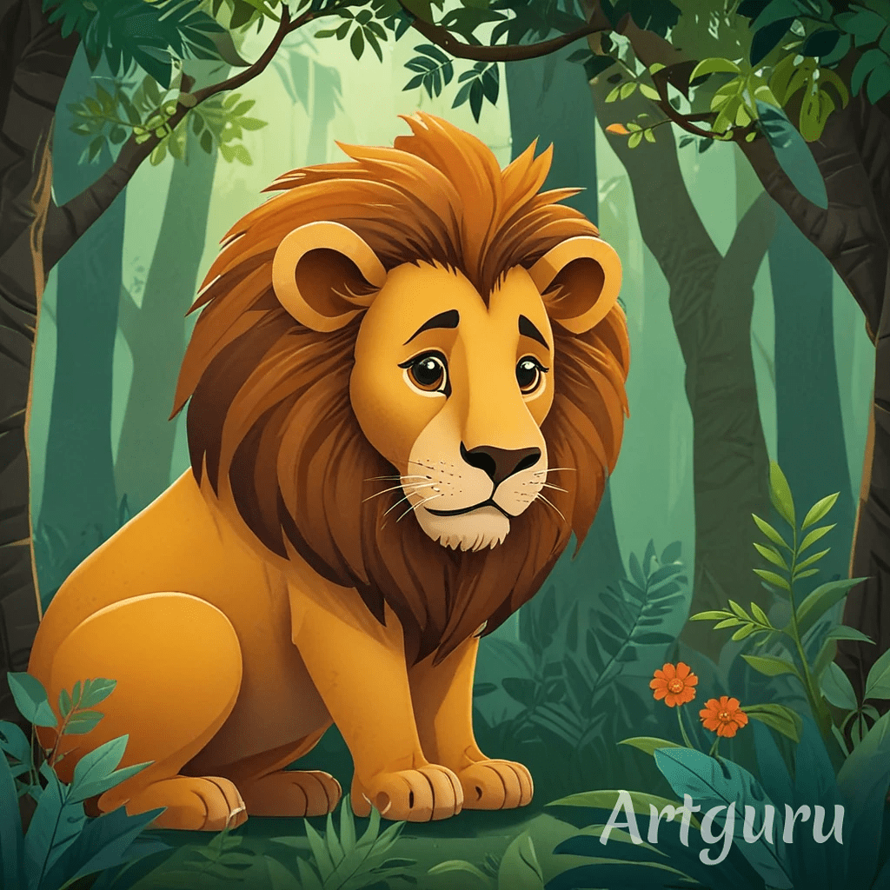

Bem-vindo ao Módulo de Zoologia

Iniciar
Pontos: 0
|
Vidas: 5
❤️
Vamos aprender sobre o animal!
Sim
Não
Próxima Pergunta
Continuar

Parabéns! Você completou todas as perguntas!
Baixar Boletim (em PDF)
Jogar Novamente
Próximo Módulo

Você perdeu! Que tal tentar novamente?
Tentar Novamente